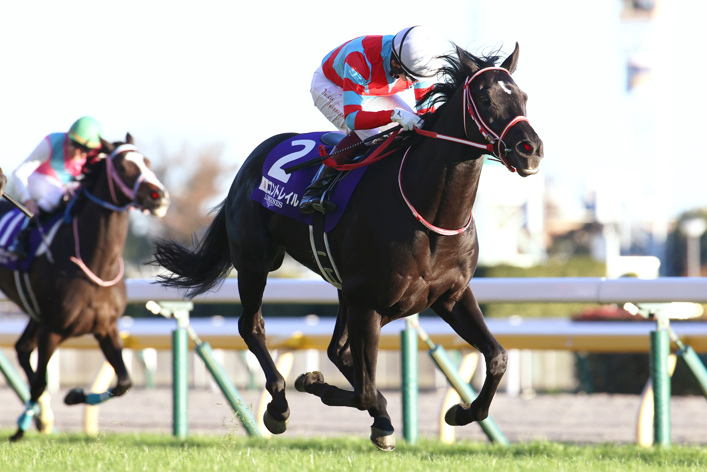

「空の軌跡」父ディープインパクトに並ぶ無敗の三冠馬
コントレイル

父ディープインパクトを彷彿とさせる軽やかな走りと、勝負どころでの爆発的な加速を武器に、2020年に史上3頭目となる無敗のクラシック三冠を達成。父子二代での無敗三冠達成という世界的な快挙を成し遂げました。コロナ禍の日本競馬界に希望を与え、引退レースのジャパンカップで有終の美を飾ったその姿は、多くのファンの記憶に刻まれています。
基本データ
- 主な鞍上： 福永祐一
- 獲得賞金： 11億9529万4000円
- 通算成績： 11戦8勝
- 脚質： 差し
-
血統（父母）：
- ディープインパクト
- ロードクロサイト
能力パラメータ
※独自解析による競走能力アーカイブ
全戦績
| 年 | レース名 | 着順 | 着差 | 鞍上 |
|---|---|---|---|---|
| 2019 | 2歳新馬 | 1着 | 2 1/2 | 福永祐一 |
| 2019 | 東スポ杯2歳S(G3) | 1着 | 5馬身 | R.ムーア |
| 2019 | ホープフルS(G1) | 1着 | 1 1/2 | 福永祐一 |
| 2020 | 皐月賞(G1) | 1着 | 1/2 | 福永祐一 |
| 2020 | 日本ダービー(G1) | 1着 | 3馬身 | 福永祐一 |
| 2020 | 神戸新聞杯(G2) | 1着 | 2馬身 | 福永祐一 |
| 2020 | 菊花賞(G1) | 1着 | クビ | 福永祐一 |
| 2020 | ジャパンC(G1) | 2着 | 1 1/4 | 福永祐一 |
| 2021 | 大阪杯(G1) | 3着 | 0.9 | 福永祐一 |
| 2021 | 天皇賞・秋(G1) | 2着 | 1馬身 | 福永祐一 |
| 2021 | ジャパンC(G1) | 1着 | 2馬身 | 福永祐一 |
主な産駒（子供たち）
- 2024年誕生予定（初年度産駒）
- 空を翔ける血統の継承が期待されます
※リンクがある馬は詳細ページへ移動できます
伝説の瞬間：2021年ジャパンカップ「涙の有終の美」
三冠達成以降、勝利から遠ざかっていた中で迎えた引退レース。福永祐一騎手を背に、直線で力強く抜け出し後続を完封。ゴール後、パートナーを労う福永騎手の涙と、ファンへ向けた最後のお辞儀は、日本競馬史に残る感動的なフィナーレとなりました。